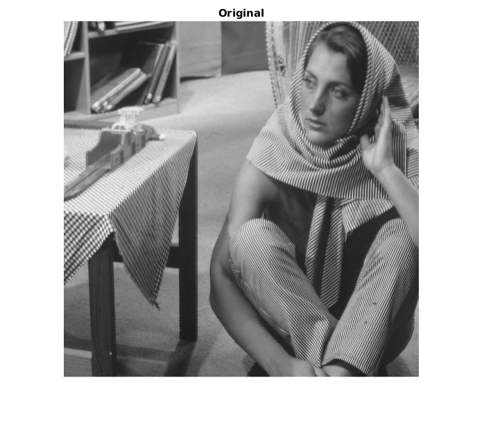
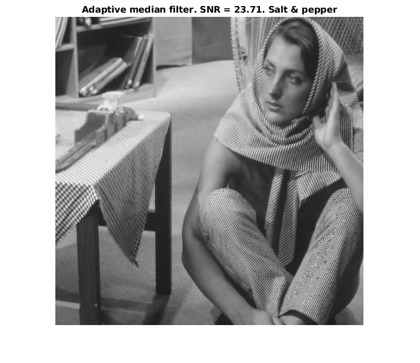
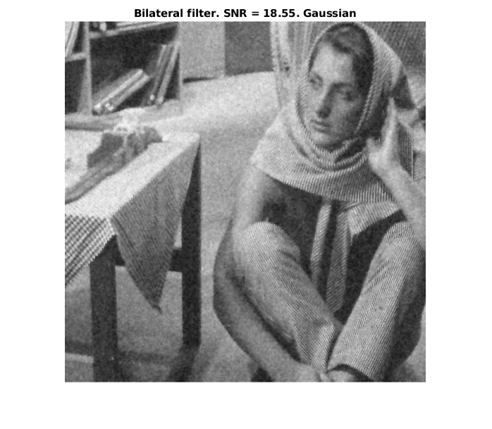
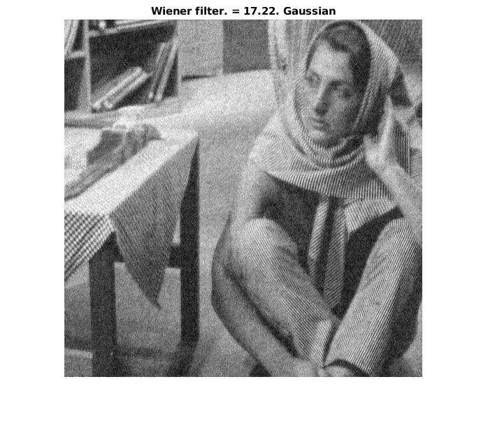
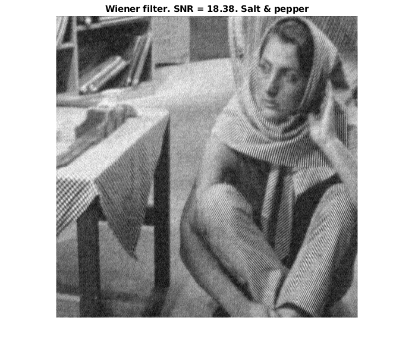
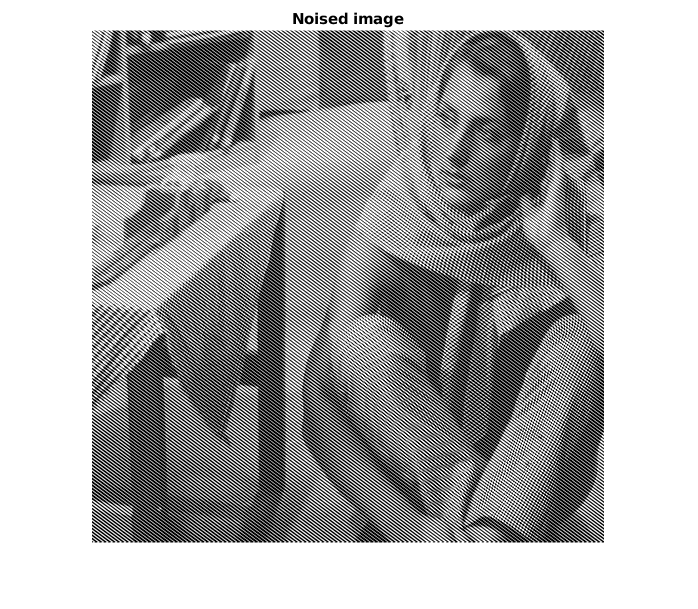
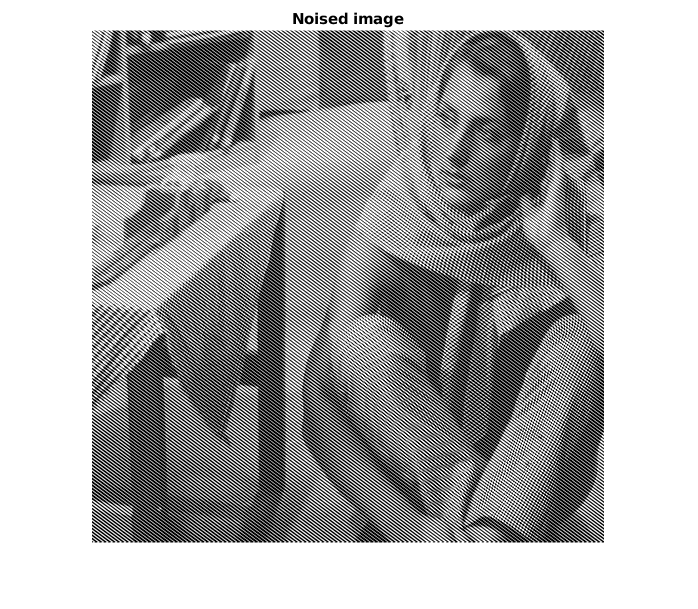
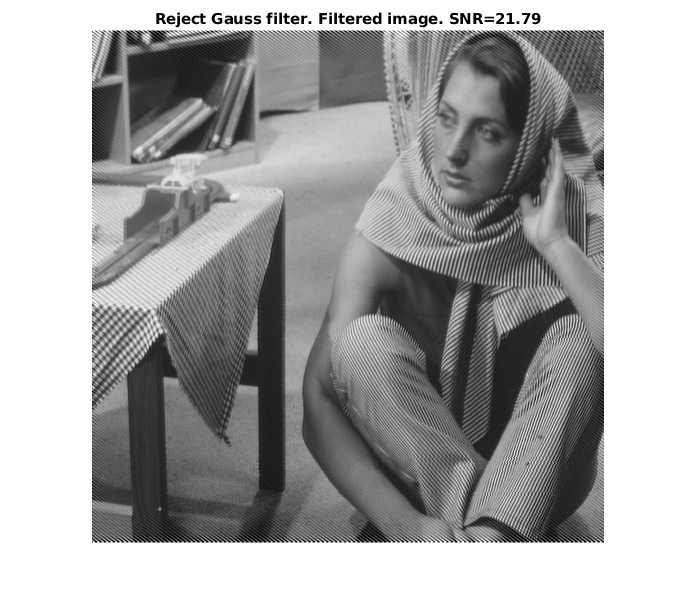

Contents
Task 1
clc; close all; clear; I = imread('barbara.png'); figure; imshow(I); title('Original'); drawnow; I_gauss = imnoise(I, 'gaussian', 0.03); I_pepper = imnoise(I, 'salt & pepper', 0.03); I_gauss = adapt_filt(double(I_gauss), 0.1, 5, 5); I_pepper = adapt_filt(double(I_pepper), 0.1, 5, 5); snr_gauss = snr(double(I), double(I_gauss) - double(I)); snr_peper = snr(double(I), double(I_pepper) - double(I)); figure; imshow(I_gauss, []); title([sprintf('Local mean filter. SNR = %1.2f', snr_gauss), '. Gaussian']); drawnow; figure; imshow(I_pepper, []); title([sprintf('Local mean filter. SNR = %1.2f', snr_peper), '. Salt & pepper']); drawnow;
Task 2
clc; close all; clear; I = imread('barbara.png'); figure; imshow(I); title('Original'); drawnow; I_gauss = imnoise(I, 'gaussian', 0.03); I_pepper = imnoise(I, 'salt & pepper', 0.03); I_gauss = adpmedian(I_gauss, 5); I_pepper = adpmedian(I_pepper, 5); snr_gauss = snr(double(I), double(I_gauss) - double(I)); snr_peper = snr(double(I), double(I_pepper) - double(I)); figure; imshow(I_gauss); title([sprintf('Adaptive median filter. SNR = %1.2f', snr_gauss), '. Gaussian']); drawnow; figure; imshow(I_pepper); title([sprintf('Adaptive median filter. SNR = %1.2f', snr_peper), '. Salt & pepper']); drawnow;
Task 3
clc; close all; clear; I = imread('barbara.png'); figure; imshow(I); title('Original'); drawnow; I_gauss = im2double(imnoise(I, 'gaussian', 0.03)); I_pepper = im2double(imnoise(I, 'salt & pepper', 0.03)); sigma_r = 0.3; sigma_d = 1.2; N = fix(3 * sigma_d + 1); I_gauss = bilateral_filter1(I_gauss, N, sigma_d, sigma_r); sigma_r = 70; sigma_d = 1.5; N = fix(3 * sigma_d + 1); I_pepper = bilateral_filter1(I_pepper, N, sigma_d, sigma_r); I_gauss = im2uint8(I_gauss); I_pepper = im2uint8(I_pepper); snr_gauss = snr(double(I), double(I_gauss) - double(I)); snr_peper = snr(double(I), double(I_pepper) - double(I)); figure; imshow(I_gauss); title([sprintf('Bilateral filter. SNR = %1.2f', snr_gauss), '. Gaussian']); drawnow; figure; imshow(I_pepper); title([sprintf('Bilateral filter. SNR = %1.2f', snr_peper), '. Salt & pepper']); drawnow;
Task 4
clc; close all; clear; I_original = imread('barbara.png'); figure; imshow(I_original); title('Original'); drawnow; I_gauss = imnoise(I_original, 'gaussian', 0.03); I_pepper = imnoise(I_original, 'salt & pepper', 0.03); I_original = double(I_original); I_gauss = double(I_gauss); I_pepper = double(I_pepper); H = winer(I_original, I_gauss); F = fft2(I_gauss, size(H, 1), size(H, 2)); F_eta = (H .* F); eta = real(ifft2(F_eta)); eta = real((eta(1:size(I_original, 1), 1:size(I_original, 2)))); snr_g = snr(double(I_original),double(eta)-double(I_original)); figure; imshow(uint8(eta), []); title([sprintf('Wiener filter. = %1.2f', snr_g), '. Gaussian']); H = winer(I_original, I_pepper); F = fft2(I_gauss, size(H, 1), size(H, 2)); F_eta = (H .* F); eta = real(ifft2(F_eta)); eta = real((eta(1:size(I_original, 1), 1:size(I_original, 2)))); snr_p = snr(double(I_original), double(eta) - double(I_original)); figure; imshow(uint8(eta), []); title([sprintf('Wiener filter. SNR = %1.2f', snr_p), '. Salt & pepper']); drawnow; 
Task 5. Optimal filtering
clc; close all; clear; I = im2double(imread('barbara.png')); figure; imshow(I); title('Original'); drawnow; M = size(I,1); N = size(I,2); n = 1; u_0 = (-1) ^ n * fix(0.3 * M / n) - 0.5; v_0 = -0.75 * u_0; A = 0.5; x = 0:(M - 1); y = 0:(N - 1); r = zeros(M,N); for i = 1:M for j = 1:N r(i,j) = A * sin (2*pi * (u_0 * x(i) / M + v_0 * y(j) / N) + 1); end end J = I + r; figure; imshow(J); title('Noised image'); drawnow; [U, V] = dftuv(M, N); D_1 = sqrt((U - u_0) .^ 2 + (V - v_0) .^ 2); D_2 = sqrt((U + u_0) .^ 2 + (V + v_0) .^ 2); [d0, ~] = fminsearch(@(x) -minSNR(x,I, J, D_1, D_2), 50); H = 1 - (1 - exp(- (D_1 .* D_2) / (2 * d0 ^ 2))); F = fft2(J, size(H,1), size(H,2)); F_eta = (H .* F); eta = real(ifft2(F_eta)); w = (mean(mean(J .* eta)) - mean(J(:)) * mean(eta(:))) / (mean(mean(eta .^ 2)) - mean(eta(:)) .^ 2); f = J - w * eta; snr = snr(double(I), double(f) - double(I)); figure,imshow(f), title(sprintf('Optimal filtering. Filtered image. SNR=%1.2f', snr)); drawnow;
 
 Task 5. Reject Gauss filter
clc; close all; clear; I = im2double(imread('barbara.png')); figure; imshow(I); title('Original'); drawnow; M = size(I,1); N = size(I,2); n = 1; u_0 = (-1) ^ n * fix(0.3 * M / n) - 0.5; v_0 = -0.75 * u_0; A = 0.5; x = 0:(M - 1); y = 0:(N - 1); r = zeros(M,N); for i = 1:M for j = 1:N r(i,j) = A * sin (2*pi * (u_0 * x(i) / M + v_0 * y(j) / N) + 1); end end J = I + r; figure; imshow(J); title('Noised image'); drawnow; [U, V] = dftuv(M, N); D_1 = sqrt((U - u_0) .^ 2 + (V - v_0) .^ 2); D_2 = sqrt((U + u_0) .^ 2 + (V + v_0) .^ 2); [D_0, snr] = fminsearch(@(x) -minSNR(x, I, J, D_1, D_2), 50); H = 1 - exp(-D_1 .* D_2 / (2 * D_0 ^ 2)); F = fft2(J, size(H, 1), size(H, 2)); g = real(ifft2(H .* F)); g = g(1:size(J, 1), 1:size(J, 2)); figure; imshow(g); title(sprintf('Reject Gauss filter. Filtered image. SNR=%1.2f', -snr)); drawnow;
Оптимальный фильтр позволил добиться большего SNR.
Task 6
clc; close all; clear; I = imread('barbara.png'); figure; imshow(I); title('Original'); drawnow; I_gauss = imnoise(I, 'gaussian', 0.03); snr_gauss = snr(double(I), double(I_gauss) - double(I)); figure; imshow(I_gauss); title([sprintf('Noised image, SNR = %1.2f', snr_gauss), '. Gaussian']); drawnow; I_pepper = imnoise(I, 'salt & pepper', 0.03); snr_pepper = snr(double(I), double(I_pepper) - double(I)); figure; imshow(I_pepper); title([sprintf('Noised image, SNR = %1.2f', snr_pepper), '. Salt & pepper']); drawnow; I = double(I); I_gauss = double(I_gauss); I_pepper = double(I_pepper); I_gauss = padarray(I_gauss, [1 1], 'replicate'); I_pepper = padarray(I_pepper, [1 1], 'replicate'); for i = 2:size(I_gauss,1)-1 for j = 2:size(I_gauss,2)-1 I_filtered1(i-1,j-1) = fuzzy(I_gauss(i-1:i+1,j-1:j+1), -70); I_filtered2(i-1,j-1) = fuzzy(I_pepper(i-1:i+1,j-1:j+1), -50); end end I_filtered1 = uint8(I_filtered1); I_filtered2 = uint8(I_filtered2); snr1 = snr(double(I), double(I_filtered1) - double(I)); snr2 = snr(double(I), double(I_filtered2) - double(I)); figure; imshow(I_filtered1); title([sprintf('Filtered, SNR = %1.2f', snr1), '. Gaussian']); drawnow; figure; imshow(I_filtered2); title([sprintf('Filtered, SNR = %1.2f', snr2), '. Salt & pepper']); drawnow;
Фильтр на основе нечеткой логики достаточно неплохо справился с удалением шумов типа "соль-перец", но остались те шумы, которые не являлись единичными. С фильтрацией нормального шума данных фильтр не справился.